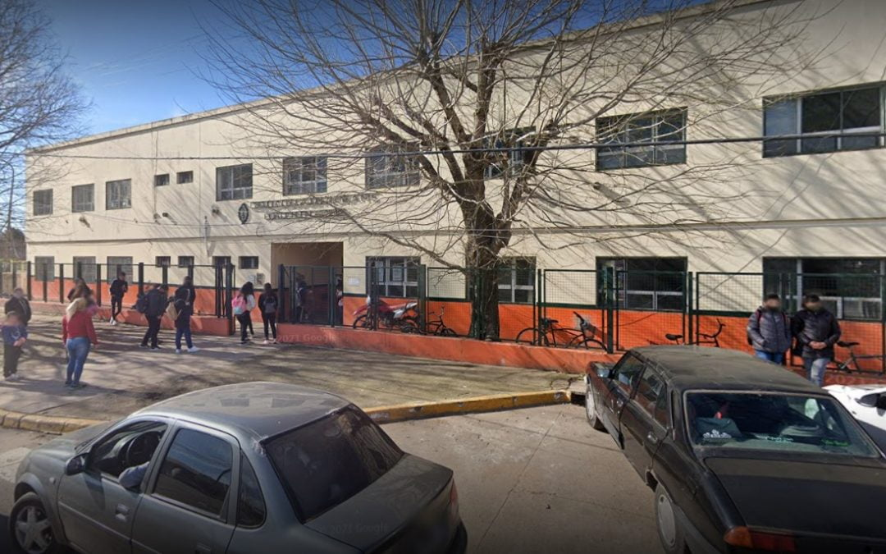

Formación técnica
Conocimientos para entender cómo funcionan las cosas.
Barrio Luz — Ranelagh
Conocé nuestra escuela, descubrí nuestras especialidades y explorá las oportunidades que ofrece la educación técnica para construir tu futuro.

Técnica N.º 5Estás invitado
Venite con tu familia y amigos a conocer los proyectos, talleres y trabajos de nuestros estudiantes de Informática, Programación y Construcciones.
Para conocer el horario y el programa de la muestra, consultá directamente en la escuela.
Somos la Escuela de Educación Secundaria Técnica N.º 5, en Barrio Luz, Ranelagh. La educación técnica combina conocimientos teóricos y prácticos: te ayuda a desarrollar capacidades para seguir estudiando y para prepararte para el mundo laboral.
Conocimientos para entender cómo funcionan las cosas.
Se aprende también haciendo.
Pensar, probar y encontrar soluciones.
Ideas propias para hacer cosas nuevas.
Los desafíos se resuelven entre todos.
Una base para estudiar o trabajar.
Es el mundo de las computadoras, los componentes y las redes. Entender la tecnología permite usarla mejor y resolver problemas relacionados con sistemas informáticos.
Permite crear soluciones digitales, desarrollar el pensamiento lógico y resolver problemas paso a paso.
Une los conocimientos técnicos con la representación de proyectos (planos, dibujo técnico) y los procesos constructivos.
Las especialidades se presentan de forma general. Para conocer el plan de estudios, consultá directamente en la escuela.
Estas son características generales de la educación técnica, no promesas de resultados ni de empleo.
Formación que une lo que se piensa con lo que se hace.
Desarrollo de saberes y destrezas técnicas.
Aprender a analizar situaciones y buscar soluciones.
Ideas propias y trabajo con otros.
Posibilidad de continuar estudiando.
Preparación para incorporarse al trabajo.
Escuela, espacios y actividades. Fotos de nuestros proyectos, talleres y espacios. Tocá una para verla en grande.
Calle 368 B esquina 316, Ranelagh, partido de Berazategui, Buenos Aires, Argentina.
Colectivos: 603619
Cómo llegarEn Calle 368 B esquina 316, Ranelagh, partido de Berazategui, Buenos Aires. Podés abrir la ubicación en Cómo llegar.
El viernes 6 de noviembre de 2026, en la escuela (Calle 368 B esquina 316, Ranelagh). Para horarios y programa, consultá por los medios de contacto.
Informática, Programación y Construcciones. Para conocer el plan de estudios, consultá directamente en la escuela.
Llegan los colectivos 603 y 619. Para paradas, recorridos y horarios, consultá la información oficial de las líneas.
Por teléfono al 011 4258-4354 o al celular +54 9 11 2761-3366, por correo a eestn5berazategui@gmail.com o por Instagram en @tecnica_n5_berazategui.
Fechas, requisitos y vacantes se consultan directamente con la escuela, por los medios de contacto.
Estudiá, aprendé, descubrí y construí tu futuro en la educación técnica.